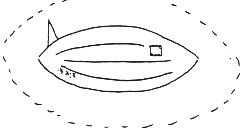
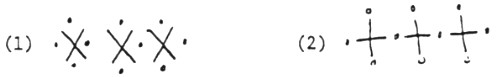
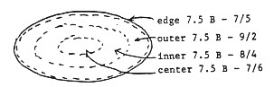
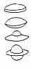
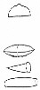

George Kocher, RAND Corporation.
Pour utilisation RAND uniquement, ne pas citer dans des publications ou correspondances RAND externes.
27 Novembre 1968 (déclassifié en 1997).
| Home |
|---|
Le sens commun est la quintessence des expériences et préjudices de son temps. C'est un conseiller bien moins fiable lorsque l'on est confronté à une situation parfaitement nouvelle [Gustav Naan]
Les OVNIs -- Objets volants non identifiés, ou soucoupes volantes comme ils sont souvent trop appelés -- sont dans l'esprit du public depuis au moins 22 ans. Pour un certain nombre de raisons, nous connaissons un peu plus de choses sur eux aujourd'hui que nous n'en savions au début. Il existe ici une grande quantité d'informations erronées sur le phénomène non seulement dans les esprits du public, mais tout aussi bien parmi des groupes éduqués tels que les scientifiques. Le but de cette série d'essais est de décrire divers aspects du phénomène, rendre clairs mes préjudices et leurs raisons, et de suggérer un moyen de procéder sur ce problème intéressante et potentiellement très significatif.
Mais d'abord, quelques mots sur le terme OVNI. J. A. Hynek, un astronome ayant une implication continuelle avec l'étude des ovnis depuis plus de
20 ans, définit les ovnis comme tout observation aérienne ou de surface signalée visuellement ou par retour radar
restant inexpliquée par les moyens conventionnels même après examen par des personnes compétentes.
Cette
définition... ne spécifie ni volant ni objets [Christian Science Monitor, May 23, 1967].
Je serais d'accord, mais préfèrerais remplacer ou retour radar
avec ou observation instrumentale
et même
après examen par des personnes compétentes
par même après un examen compétent par des personnes
qualifiées.
Ceci, alors, est la définition que j'ai adopté dans les 5 essais qui suivent.
Ceux familiers avec la littérature sur les ovnis savent que les signalements d'observations n'ont pas commencé avec l'observation d'Arnold en 1947, mais qu'une phénomenologie relativement semblable à celle rapportée aujourd'hui peut être trouvée dans des documents remontant aux premiers temps. Vallée [2] donne un échantillon de ceci ; B.L.P. Trench [3] a réalisé une étude plus approfondie et reports on the research of others able tostudy the original documents.
Qu'est-ce qui fut rapporté ? Des disques lumineux, des boucliers, des globes et des objets allongés dans le ciel, parfois seuls,
parfois en grands nombres. Occasionaldescriptions of interactions with the observers are also mentioned,including
landings, and seeing and communicating with occupants. The latterevents especially were almost always interpreted in a
religious context. Un exemple récent est l'apparition
répétée d'une phénoménologie ovni typique à Fatima, au Portugal, lors de 6 mois successifs en 1917. Le phénomène du 13 octobre fut le mieux rapporté et fut observé par
une foule de près de 70 000 personnes, dont un certain nombre de scientifiques, journalistes, athées et agnostiques, ainsi que de catholiques
fidèles. Un des scientifiquement curieux fut le Dr. A Garrett de l'Université de Coimbra. La pluie, qui tombait ce
jour-là, cessa et la foule regarda vers le haut pour voir le "soleil" maintenant visible à travers les nuages épais. Le professeur Garrett écrivit, ...je
me tournais vers ce (soleil) qui attirait tous les yeux et je pus le voir comme un disque avec un bord clairement
découpé, avec un contour vif, lumineux et brillant, mais sans blesser quiconque. La comparaison que j'ai entendue à
Fatima avec un disque d'argent mat, ne me semble pas exacte. C'était une couleur plus claire, plus vive, plus riche
et avec des teintes changeantes comme le lustre d'une perle. Ce n'était pas du tout comme la Lune par une nuit claire et transparente, for one
saw and felt it like a living star. Pas plus que ce n'était sphérique comme la Lune, ni que cela avait la même qualité of lighter
and less light. Cela avait l'air d'une roue polie cut out of mother-of-pearl. Pas plus que cela ne pouvait être
confondu avec le Soleil vu à travers une brume -- il n'y
avait pas de brume... Ce disque tournait en rond de manière vertigineuse. Ce n'était pas comme le scintillement
d'une étoile : il tourbillonnait sur lui-même avec une rapidité folle... Le soleil, préservant la célérité de sa
rotation, se détacha du firmament et avança, rouge-sang, vers la terre, menaçant de nous écraser du poids de sa
vaste et flamboyante masse. Ces moments firent une impression terrifiante
[4]. La relation de l'ancienne phénoménologie avec la religion est discutée par Thomas [5].
Un exemple de earlier celestial displays of interest est illustré dans les figures 1 et 2. These are broadsheets from Nuremberg (1561) et Basel (1566), respectivement. Le psychologue C. G. Jung fournit une analyse du conten de la gravure sur bois dans son intéressant ouvrage. (6) La référence 7 a une reproduction très intéressante d'une freque du 14ème siècle dans une église yougoslave.
La période moderne du phénomène a commencé avec une observation ayant reçue une large publicité, faite par Kenneth Arnold dans l'état de Washington en 1947. Une étude de Bloecher des signalements nord-américains au cours de la période de 4 semaines entourant l'observation d'Arnold liste 853 événements, dont 38 observations faites avant l'observation largement publiée d'Arnold [8].
Because the early reports seemed to suggest airborne craft of unusualappearance and kinematics, the problem came to rest with the newlyorganized U.S. Air Force. Initial fears were that the country was beingoverflown by advanced foreign aircraft, possibly on intelligence missions.The latter was suggested by the large number of sightings from the WhiteSands, New Mexico area and from the vicinity of the Hanford, Washingtonatomic plant.
Serious inquiry proceeded for a few years without any positive results. Anumber of supposedly knowledgeable people spoke out pointing out thesporadic nature of the sightings, and that since the reported kinematics were inconsistent with current physical theory, the UFOs werenot likely to be from a foreign power. Further, they argued, no otherplanets in our solar system were believed to support life -- certainly notintelligent life -- and since even the nearest star was over four lightyears away, the hypothesis of extraterrestrial origin was simplyunacceptable from a scientific point of view. (9)
Fig. 2 -- Basel Broadsheet, 1566
Both Broadsheets from the Wickiana Collection, Zurich Central Library
The Air Force investigative effort worked as follows: (10) Whenever asighting was made, a report was to be made out and turned in to the AirForce at base level. The report was forwarded to Wright-Patterson AFB, Ohiofor study. If the report was interesting enough, followup inquiry was made.By 1952 the number of reports coming in was so large that the CIA wasconcerned that an actual attack on the country might not be immediatelyrecognized. A panel of scientists was then convened in January 1953 tostudy the available evidence and see what conclusion could be reached aboutUFOs. After seven days of hearing evidence and discussing the matter it wasconcluded that there was only circumstantial evidence of theextraterrestrial hypothesis. The panel recommended a broadened study effortwith full disclosure of investigations. In order to unplug the militaryintelligence channels, however, the CIA recommended that, since the UFOsapparently posed no threat, the Air Force should debunk UFO reports and trygenerally to discourage public interest in them, in the hope that theywould go away. (11)
It was the CIA's recommendation, apparently, that was made policy, for theinvestigative procedures used since 1953 have been vestigal and thehandling of the subject by the authorities tended to make witnesses lookridiculous. In spite of the unfavorable publicity accorded witnesses,reports persisted, and no doubt in response to official behavior severalcivilian study groups were formed to receive reports and investigatesightings. The most successful of these groups is the NationalInvestigation Committee on Aerial Phenomena (NICAP). NICAP's membership iswell dispersed geographically and acts to learn as much as possible fromsightings. The large number of scientific and technical personnel in theNICAP membership aids the quality of their evaluations. A summary ofcharacteristics of the UFO phenomenology published by NICAP in 1964 (12) contains 575 reports that were extensively checked by NICAPfor accuracy.
A series of sightings in 1965 and 1966 received considerable publicattention arid after the poor public reception given the officialexplanations, the Air Force felt compelled to contract for a 15 month(later stretched to l8 months) scientific study to be performed at theUniversity of Colorado under the leadership of E. U. Condon, a highlyrespected physicist. The Condon Committee is due to complete investigationsat the end of June 1968; its report will be reviewed by the NationalAcademy of Sciences (presumably to validate that the study was indeed theobjective pearl of the scientific method that was desired), and is expectedto be made public in October 1968. Unfortunately, the dismissal of twomembers of the Committee in February 1968 resulted in publicity suggestingthat the study was not, in fact, objective. It remains, therefore, to seethe final report to determine the worth of the study.
In the meantime, the respectability accorded UFOs by the $500,000 studycontract permitted a considerable amount of scientific interest to surface.Astronomer Hynek has made a number of public statements on the basis of hislong involvement as a consultant to the Air Force; atmospheric physicistJames F. McDonald has turned his attention full time to the subject, and anumber of scientific and technical journals have printed some dialogue -notably Science, the AIAA Journal, Bulletin of the Atomic Scientists andthe Journal of the Astronautical Sciences. It is also noteworthy that theUniversity of Toronto has recently formed a UFO study group.
Even the Soviets, who previously refused even to discuss the subject nowadmit to having a study group with good qualifications. The USSR Academy ofSciences still holds to the orthodox scientific view that UFOs are anonproblem, however, using the same arguments we heard so long. Thesearguments are just as invalid in the USSR as in the USA.
It therefore appears that the subject is slowly and finally being regardedas a fit subject of scientific inquiry. It is hoped that enough scientistswill acquaint themselves with the subject so that progress can finally bemade.
(Reference 13 is a good account of how the UFO phenomenon was treated inthe U.S. and is recommended to those wondering how science came toconsciously ignore the subject.)
The astonishing thing would be if they did not exist.Jean Cocteau
We saw in Part 1 that the historical aspects suggest an extraterrestrialexplanation to UFOs. While it has not been established that thecontemporary phenomena are extensions of the historical, there does seem tobe a continuity in the descriptions of the phenomena described. We shalltherefore look at contemporary astronomical knowledge and theories andascertain the likelihood of the existence of other highly developed lifeforms.
To begin with, the observable universe -- that is, the distance to which wecan observe luminous objects -- is several billion lightyears in radius (alight year is the distance light travels in a year at a rate of 186,300miles per second. The sun is 8 light minutes from the earth. Thenext-nearest star is 4.2 light years away). Within this vast volume we findhundreds of millions of galaxies. Our own (Milky Way) galaxy is similar tomany of those we see at great distances. It is a lens-shaped assemblage ofsome 100 milliards d'étoiles ayant un diamètre of about 100 000 light years. Thesun is but one of its component stars and lies about 30,000 light yearsfrom the center, close to the plane of symmetry.
Now let us just consider the stars in our own galaxy -- specificallyexcluding those in neighboring or distant galaxies. We would like toestimate the number of stars having planets roughly similar to the Earth. >From the statistics of stars within 15 light years of the sun we find thatonly about one-third are single, the rest binary or multiple. Sinceplanetary orbits are often unstable in multiple systems (depending on thedetails of the configuration) we will say that only 30 billion stars in ourgalaxy now have a dynamical environment that permits planets to existaround them. Will these stars have planets? We cannot state with assurancethat they will; however, current knowledge supports the theory thatplanetary formation is a natural adjunct to formation of the star itselffrom the interstellar gas cloud.
We would therefore expect about 30 billion stars to have one or moreplanets. Now, we can reject certain classes of stars as candidates orhabitable planets, because their lifetimes are too short (these are starsof high mass). Others can be rejected because of variability in lightoutput, a characteristic that would make evolutionary development of lifemuch more difficult. In fact if we select only those stars similar to thesun (whose peak of radiation energy coincides with a region of terrestrialatmospheric transparency) we have only a few percent of the total -- aboutone in 30. Therefore, we would expect about 1000 million suitable solartype stars exist. Of these, it is estimated by various astronomers that 200-600 million have planets at about the right distance and have beenaround long enough that life forms as developed as our own could exist.Implicit in further discussion are the assumptions that:
Now let us turn momentarily to time scales. The sun and earth are on theorder of 5 billion years old. We might define modern man as being about5000 years old (Stonehenge is 4000 years old) -- just one millionth of theearth's age. The age of science is certainly not more than 500 years, soour scientific and technical development has thus far occupied only oneten-millionth of the earth's life span. We expect the sun will burn another5 billion years before significant changes in its brightness occur. Now theage of the galaxy is between 5 and 10 billion years; therefore among the200-600 millidn stars we would expect to have acceptable planets, somewould be older than the sun, some younger (for star formation is stillcontinuing, even though at a lesser rate than in the galaxy's earlyhistory) and some the same age. It should be clear from assumption (3) andthe example of our own development, that among the populated planets those younger than the sunwould be peopled by beings very much behind us technologically, while thoseon older planets would be extraordinarily advanced (remember our progressof 500 years and note that some planets could be as much as a few billionyears older). Indeed, we would be surprised to find someone else at justour stage of technological development. For the purposes of this paper, wecan ignore both the multitude younger than ourselves and those at our pointof development. Even so, we are left with the possibility of 100 000 000 planets in the galaxy having life forms very much advanced from us. (Thisnumber would be reduced significantly if life forms destroyed themselvessoon after reaching our age of development. This is a philosophical pointon which I am optimistic -- I believe the majority of races will learn tosurvive.) If these stars are uniformly distributed in the galactic disk,the average separation will be about 10 light years.
The usual scientist's reaction at this point is, well, even if the assumptions are correct and this number of advanced civilizations doesexist, contact is still impossible because of the speed of light limitation of the theory of relativity. An excellent example of this kind ofreasonsing can be found in Ref. 14. My reply is that such a statement would appear to be short sighted. For the moment, let us ignore the possibilitiesof overcoming the long time of travel by suspended animation and the like. Recall that our own physical theory has been developed in only 500 years.What can we expect in the next 500? Or 1000 or million or even billionyears? I suggest that _if_ a way to circumvent the speed of lightrestriction is possible, it has already been found by someone in our galaxy. (I haven't the faintest idea how this might be done and I fullyagree that our own experimental data appear to accurately confirm the existence of this limitation.) If it has been discovered by one, wecertainly would expect it to be used; if no other planet's inhabitants independently discovered the means, it makes little difference for such athing could be taught by the discoverer. Thus we may conclude that it isvery likely that at least one, and probably many of the 100 millionadvanced planetary populations is capable of interstellar travel.
The next question is, of course, have any of them been here? That questioncannot yet be answered definitively. Without knowing what kind ofphenomenology extraterrestrial visitors might exhibit, I will fall back on my scientific, mechanistic attitudes and say it makes sense to look forsome kind of vehicle or spaceship. It appears that the class of phenomenology called UFO reports may contain, as a subset, actualobservations of such craft. We shall now turn to the reports to see whenand where things are seen and by whom and what phenomenology, if any) isrevealed by the reports.
(Further information about the astronomical and biological possibilitiesare in Ref. 15, whose principal defects are
Any collection of reports of unknown aerial sightings by the public willinclude a large percent of noise - sightings of something explainable. Thereports are made because the appearance falls outside the range of the observer's experience, and the observer believes it is sufficientlyanomalous to warrant the attention of authorities. Thus, any large collection of reports will include descriptions of aircraft, balloons)spacecraft, astronomical objects, atmospheric effects and the like. Often the practiced and perceptive analyst can recognize the stimulus,particularly if he has access to records of aircraft, balloon, and satellite movements, meteorological data and astronomical phenomenology.Recognition of stimulus is aided by a high quality report which is as quantitative as possible and which shows the observer to be able todifferentiate between observation and interpretation. Of course a number of reports will be so lacking in details that no conclusion can be reachedabout what was seen. These are of little use; they may, however, serve as corroborating evidence to another, higher quality, report and should not,therefore be rejected. The really interesting class of reports is that reporting phenomenology which is clearly extraordinary. The observer'squalifications may be such that the report is not only highly credible but is articulate and quantitative as well. It is this subclass of reports,variously estimated at 5 to 20 percent of the total, that offer hope of our learning what is going on.
Hynek considère 2 paramètres de crédibilité et étrangeté des rapports, et suggère que l'enquêteur n'a vraiment besoin que de se préoccuper des rapports ayant une haute étrangeté et une haute credibilité. Le physicien est en position d'évaluer l'étrangeté, la spécialiste des sciences sociales devrait être capable de fournir une mesure de la crédibilité. Hynek also comments on a number of beliefs about UFOs and reports stating, (18) among otherthings, that most reports are made by people who previously never gave much thought to UFOs; that reports are not always vague; and that well educated,well trained, reliable, stable people also contri- bute reports. These conclusions have been reached by most people who have taken the trouble tocollect and investigate reports first hand.
To illustrate the character of reports, I will quote several narrativesfrom the literature. (Narratives, of course, are just the beginning of anyreport. Quantitative information, usually not given in the narrative mustbe obtained by careful interview of the witness.) The firzt is taken from acollection of 160 reports by Olsen. (19) It was originally made to NICAP.
Date: 24 avril 1962
Lieu : Springfield (comté de Delaware), Pennsylvanie
Le 1er témoin, J. A. Gasslein, Jr. (lieutenant-colonel de l'USAR à la retraite) rapporte : "Time:Approximately
1945 hours, weather: clear, cloudless, medium blue sky,visibility good.
"My wife was driving her mother home following the latter's visit to ourhome. They had driven around the block to
higher ground when my wife'smother looked out the car window and saw a large object. It was movingslowly and silently
in an east-to-west direction at not over 50 ft. abovestreet level. (Determined by the proximity to and relationship to
the sizeof the Cape-Cod-type bungalows over which the object was passing.) My wifethen plainly saw the object
herself.
"Anxious to have me see the object, my wife quickly drove the car back toour house and attracted my attention. I
had been working in the basement. Iran out of the house and up the street for a view. by the time I saw it,the object
appeared to be about a quarter to a half-mile away, moving in awesterly direction. I saw it as an object smaller at
the top than at thebase, seemingly suspended in the air at an angle of about 45 degrees frommy position, and giving
off colored lights. I know that the object was notany kind of conventional aircraft of balloon.
"Having had the advantage of a closer viewing than I, my wife describes theobject as follows..
" 'The UFO appeared to be about the size of one of the Cape Cod houses overwhich it passed, which would make it
approximately 30 ft. in diameter andabout the same dimension in height. It was circular, surmounted by a domegiving
off flashes of green light. The center section rotated a series ofsquare shaped "windows", each giving off a brilliant
white light. The basesection was somewhat saucer-shaped, curved upward. Shafts of white light were directed downward
from the base.'Unfortunately, my wife cannot recall if the exterior was metallic inappearance. In any event, the
object had a well-defined outline. Again, itmoved silently. There was no evidence of occupants of the UFO.
"Approximately 20 to 25 minutes following the first sighting describedabove, the following~sighting occured:
"Returning from taking her motherhome, my wife drove the car into our driveway alongside the house, headedwestward. In
the rear of our home was a wooded park area. My wife walkeddown the driveway to enter the house. Coming up the
driveway was a neighborfriend, a young lady 20 years of age. In a tone of astonishment, she calledmy wife's attention
to the park area, from which was emerging an object ofthe same description as outlined above moving easterly at low
level -- notover 50 ft. above ground level, as judged by the trees in the area -- theUFO proceded relatively slowly
and without sound. It was approaching therear of our home and adjacent properties.
"Again, my wife called me from the basement. By the time I got outside, theobject had made a 90 degree turn
northward and was proceeding parallel tothe backs of the houses in the same line as ours. It was perhaps 150 -
200yards distant. My observation of the characteristics of the UFO talliedwith my wife's and the young lady's. Each of
them independently made apencil sketch within a few minutes after the sighting, and the sketcheswere substantially
alike. "All told, there were at least 15 persons in thevicinity who acknowledged seeing the object at about the same
time as thesightings made by my wife and myself."
Un autre témoin, P. T. Scattergood, rapporte : Vers 8 h (20 h) I stepped outthe front door, facing south and saw a
brilliantly lighted object low inthe southern sky. At first I took it to be a jet taking off fromPhiladelphia Airport,
which is in that general direction. But I could hearno engine noise and it was traveling too slowly to be a plane.
Also it didnot have the usual blinking lights.
"It appeared to have a row of yellowish lights (which I took for thewindows of the "jet") with a clear green light
at the top. As I watched, the row of lights appeared to be obscured as though a largepaddle-wheel were revolving and
blotting them out, beginning with the rearlights and proceeding forward. Since the object was moving west, I saw
theright hand side of it. The periodic appearance and disappearance of thelights was perfectly regular. The top green
light was constantly visible. Istood on the pavement and watched the object sail leisurely to the westuntil it
disappeared behind some trees. The observation probably lastedfrom 5 to 10 minutes."
This report has the desirable features of the UFO being seen by a number ofpeople (about 15) of which two actually made reports (Hynek estime le nombre d'observations comme étant près de 10 fois le nombre de reports turned in). D'autres desirable aspects of this sighting are that it was made duringdaylight; that it was near enough that some details of its configurationwere observable; and, it was visible long enough to allow the observers toconsider "explanations" as they watched it.
The second example is reported by James F. McDonald in T. Bloecher's bookon an intense period of UFO activity in 1947. The report was made 20 yearsafter the sighting to Prof. McDonald for the reasons given at the end ofthe quotation.
"Mrs. Olavick was in her kitchen at 2101 East Hawthorne Street, Tucson,while Mrs. Down was out in the back-year patio. Suddenly Mrs. Down calledher out excitedly, and both proceeded to observe what had caught Mrs.Down's eye. The time was just after the noon hour; Tucson's skies werecompletely cloudless. Somewhat north of their zenith lay an unusual,isolated, "steamy-fleecy" cloud at an altitude which Mrs. Olavick founddifficult to estimate, though she recalled that it seemed lower thanaverage for that time of year (thus, perhaps at or below 10,000 feet,say.). No other cloud was to be seen in the sky. In and out of the cloudmoved a number of dull-white disc-like objects that rose and fell in anerratic manner, occasionally disappearing into or above the unnaturalcloud. She said that these objects were round in planform but were notspherical, for they frequently tipped a bit, exposing a flattened-sphereform. She estimates that they watched these objects cavorting near thecloud for perhaps five or six minutes before the entire group suddenlydisappeared within the cloud or perhaps above it.
"After a minute or so, as she now recalls it, a new object, perhaps threeof four times as large as the little objects, came out of the cloud on itseast side. After it emerged, the small objects began to emerge also, takingup a V-formation pattern behind it. The V comprised a line of four-abreastjust to the rear of the large object, then a line of three-abreast behindthat, and finally two-abreast in the rear. Thus the point of the V was tothe rear (in the sense of the emergent and subsequent motion). Thisformation permitted the first accurate count of the small objects, nine inall. No sooner had the last pair emerged than all ten objects shot off tothe northeast, climbing out of sight in a time that she thought wasprobably two to three seconds. She does not recall what happened to thecloud after the ten objects departed.
"I (McDonald) have spoken with Mrs. Olavick several additional times,following her first call. Her account was presented in an unembellishedmanner, and her descriptions were carefully framed, specifying just whichparts had become less distinct in her memory. But the basic vividness ofher memory of this observation she stressed repeatedly. I had to explainthat it was by no means clear that the objects she saw were identical withthose reported by Kenneth Arnold two months later. When I queried her as towhy she had not reported them, she pointed out that she and Mrs. Down wereentirely convinced that they had been fortunate enough to witness some newAmerican military vehicles about which the general public had not yet beeninformed. Later she heard of the "flying saucers," and she and Mrs. Down,when they rejoined their husbands in mid-summer in Iowa, told them abouttheir own observation. The husbands, she recalled, made such a joke of itthat they ceased mentioning it.
Again we have a daytime sighting of several minutes duration, with twowitnesses. As is often the case when.the phenomenon appears mechanical, itwas interpreted as some secret government development. Ridicule of thesighting by family members and friends (if not by authorities) isfrequently mentioned as a reason for delayed reporting of sightings.
A third report is taken from a paper Prof. McDonald presented at the 12March 1968 Canadian Aeronautics and Space Institute Astronautics Symposium,Montreal.
"At about 5:15 am., PDT, on the morning of July 4, 1967, at least fivewitnesses (and reportealy others not yet locatable) saw an object ofunconventional nature moving over Highway 5 on the edge of Corning,California. Hearing of the event from NICAP, I began searching for tnewitnesses and eventually telephone-interviewed four. Press accounts fromthe Corning Daily Observer and Oakland Tribune afforded furthercorroboration.
"Jay Munger, operator of an all-night bowling alley, was drinking coffeewith two police officers, James Overton of the Corning force and FrankRakes of the Orland force, when Munger suddenly spotted the object out thefront windows of his bowling alley. In a moment all three were outsideobserving what they each described as a dark gray oval or disc-shapedobject with a bright light shining upwards on its top and a dimmer lightshining downward from the underside. A dark gray or black band encircledthe mid-section of the object. When first sighted, it lay almost due west,at a distance that they estimated at a quarter of a mile (latersubstantiated by independent witnesses viewing it at right angles to theline of sight of the trio at the bowling alley). It was barely moving, andseemed to be only a few hundred feet above terrain. The dawn lightilluminated the object, but not so brightly as to obscure the two lightson top and bottom, they stated.
"Munger, thinking to get an independent observation from a different partof Corning, returned almost immediately to telephone his wife; but shenever saw it for reasons of tree-obscuration. At my request, Mungerre-enacted the telephoning process to form a rough estimate of elapsedtime. He obtained a time of 1-1.5 minutes. This time is of interestbecause, when he completed the call and rejoined Overton and Rakes, theobject had still moved only a short distance south on Highway 5 (about aquarter of a mile: perhaps), but then quickly accelerated and passed off tothe south, going out of their sight in only about 10 seconds, far to theirsouth.
Paul Heideman, de Fremont (Californie), conduisait vers le Sud sur l'autoroute 5 au moment de l'observation ci-dessus, along with a friend, Robert King. I locatedHeideman and obtained from him an account of his observation made from apoint on the highway north of Corning. He saw the light from the object,and had veered east (a turn not seen from the more restricted viewing pointof the bowiing-alley parking lot). Heideman said that, when first seen, itlay almost straight down Highway 5, serving to check the estimate of theother observers that the object lay only a few city blocks to their west.
The weather was clear, no haze, no wind, according to the witnesses.Munger's concise comment was "I've never seen
anything like it before."
Heestimated its "diameter" at perhaps 50-100 ft, and its vertical thicknessas perhaps
15-20 ft, with some kind of edge (band) perhaps 5-10 ft thick. No sound was ever heard. Overton stated to me that he
had no idea what itwas, but that "there was no doubt it was a craft of some sort."
The next example is from a report I personally investigated. It occurred inthe area where I was reared; the observers are known to my family; I amfamiliar with the natural phenomenology of the area.
Date: 10 October 1966
Lieu : Near Newton, Illinois
First witnesses: Mrs. A (she prefers not to be publicly identified becauseof the reaction of friends and neighbors). Time: 5:20 p.m.
"Mrs. A was in her kitchen preparing supper; five of her children wereplaying outdoors. The children shouted to
her to "come out and see thesilent plane". She writes "I glanced out the south window and there it wascoming into
sight just south of our 72 foot silo moving very slowly fromeast to west. It was about 35 feet high. My first thought
was that it was aplane making an emergency landing, but when I saw it in full view, I knewit was no plane, not like
anything I have ever seen. I hurried outside tojoin the children in the yard. It continued to move in a straight line
to the west. We could see it clearlyas it drifted over a 50 by 100 foot machine shed being built at the time[the
workers were, however, in the fields this day]. It appeared to belarger than our car, and was more oval. There was a
bluish glow around theends, top, and bottom of it. It (the glow) wasn't bright, since it wasdaylight yet, but more
like a low cloud, haze, or fog; or a mixture ofbluish-grey tiny bubbles floating along around it. The object was
seenclearly. It was blue in color and appeared to be made of metal. You couldsee [longitudinal] seam lines. There was
one black window. I thought they(assuming someone was in it) could see out but we could not see them. Ikept looking
for someone to peep out and wave, but don't recall seeing orfeeling anything at the time. There was a brownish-gold
design on the lowerback half. A raised part was on the top near the back which was noticed byall the children. It
moved very quietly, making no sound at all except fora whirling or vibrating sound for 1 or 2 seconds as it drifted on
towardthe west... We followed it down the yard and lane, continuing to watch itas it was 300 feet, then 200 feet from
the north and south gravel road andthe REA electric line which is on the west side of the road. We weretalking
together, all very excited about what it was, where it came from,if there were people in it, and if it would rise to
clear the electricline. It did; it rose so quickly and was out of sight in just a fewseconds. Our eyes could not
follow it fast enough. This was certainly afantastic thing."
The questionnaire, a lengthy correspondence, an interview in June 1967 andother checking produced the following details:
Meteorology: Clear, warm, dry weather, cloudless.
Astronomical: Moonset 3:51 p.m. EST
UFO: Prolate spheroidial shape as shown below.

The surface appeared to be non-specular, like dull aluminum or metal, andblue, the color probably deriving from the self-luminous halo. Lon-gitudinal seams were apparent, but no rivets or such were seen. The blackrectangle was assumed to be a window and appeared to be recessed. It wasnot shiny, but "like the dark of night." The surrounding glow was partlyopaque, yet self luminous. It was darker than the sky and extended about1/4 the object's length in all directions. The halo was particularly opaqueat the ends: of the object, obscuring the underlying parts. The design atthe lower rear looked like a pattern of crosses and dots like (1) or (2)

Mrs. A says the glow obscured the design and in any case her attention wasfixed on the "window". The only sound heard occurred when the UFO wasnearest the unfinished shed, being constructed of a wooden frameworkcovered with ferrous sheets. It is possible that some sheets were caused tovibrate. No electromagnetic effects were noted (TV was off) and noelectrostatic or other effects were noted by Mrs. A or her children. As theUFO disappeared, Mrs. A was just looking along the road for a car; two ofthe children said the UFO pitched nose-up and as it went up a light orflame of orange color was seen at the rear.
Enough angular data was provided from building and landmark placement andsizes that it is possible to estimate the size of the metallic portion ofthe UFO at 16 to 20 feet in length, seen at a distance of 150 to 300 feet.Its linear speed was about 4 to 8 miles per hour, based on the abovedistances and timings obtained by re-enactment. It was visible for 4minutes. Angular size was 2 3/4" at arms length. In an effort to quantifythe colors somewhat, a Nickerson color fan was used by the witnesses toselect the colors most nearly like those on the UFO. The color selectionswere made independently in direct sunlight with the color fan held in frontof a white field. The colors given were
| Surface métallique | Melle A | 7,5 PB - 7 |
|---|---|---|
| Enfant 1 | 2,5 PB - 8/5 | |
| Enfant 2 | 7,5 B - 3/5 | |
| Lueur (la couleur de "gris" n'était pas uniforme) | Melle A | 5 PB - 8/5 |
| 2.5 PB - 8/5 | ||
| Enfant 1 | 5 PB - 7/7 | |
| Enfant 2 | 2.5 PB - 6/8 | |
| Orange flare on ascent | Enfant 1 | 5 YR - 7/11 |
| Enfant 2 | 5 YR - 7/11 |
Second event: Same day, 6:30 p.m., sky is now dark. Location is in town ofNewton, Illinois, about seven miles north west of first event.
Mrs. B was walking down the steps of a friend's house toward her car. "As Istarted down the steps my eyes were
drawn by something in the south easternsky. I stopped a moment and saw very clearly a luinous bluish object
movingquite rapidly from east to west. It seemed to be rather low in the sky, butat night it is difficult to judge
distance either as to how high it was orhow far away it was. It did appear larger than a full moon, but instead
ofbeing round it had a definite oval shape. I would say an elongated oval.There was no sound that I could detect, and
while it appeared to be blueand purple, there was also a whitish glow in it. The outline of the objectwas very
distinct. I watched it until it disappeared behind some trees anda house a little less than a block from me.
Further correspondence and discussion brought forth the followinginformation: The major axis of the oval was horizontal; its path was notperfectly horizontal) but somewhat undulatory. Its color was brightest andwhitest at the center, becoming more blue and darker toward the edges. Mrs.B. estimated the colors as shown below (Since the interview was conductedin the evening) the color fan was illuminated by an incandescent lamp).

In itself, this last report, which describes a sighting of 15 to 20 secondsduration, contains insufficient information to come to any conclusion.However, when put alongside the earlier report there is the possibility ofa relationship -- could these be reports of the same thing seen underdiffering conditions of illumination? We'll never know positively but thesuggestion is quite strong.
As far as Mrs. A's sighting is concerned, we have obtained enough data fromfollow-up inquiry and on-site investigation to rule out known airbornecraft, meteorological, and astronomical phenomenon. Yet the observationsare sufficiently detailed to give us adequate confidence that some sort ofmachine was present, behaving in a very extraordinary way. Some parts ofthe object are similar to other reports (the effervescent glow, the orangecolor on acceleration, the very black "window" (which sounds like ablock-body absorber)). Other parts are unusual -- the UFO's prolatespheroidal shape and the pattern (although seeing the pattern would requirethe observer to be quite close). The original correspondence and datasheets on Mrs. A's sighting run to over 40 pages. In correspondence andinterviews over a period of 8 months no substantial inconsistencies couldbe found. The geometric data, particularly, are so intricately related thatit is most unlikely that the witness could have fabricated a story so well.In addition, acquaintances made it clear that Mrs. A. is not prone to storytelling and that "she is too busy to dream up such a tale". Mr. A, whoreturned from the fields that evening found the household stillconsiderably agitated four hours after the event. He said he had no ideawhat it was his wife and children saw, but he obviously treated thesighting seriously for he went to considerable trouble to comply with arequest to measure the sizes and locations of each building and tree on thefarm.
It is this kind of sighting - the kind which is clearly inexplicable incontemporary terms, which causes me (and other interested persons) to takethe whole subject so seriously. Hynek suggests that it is just this kind ofsighting that often goes unreported, because the witness -- especially ifhis education or training are appropriate -- knows that what he saw wasunambiguously extraordinary. And machine-like. A number of such reportswere belatedly made after the University of Colorado study effort got underway. Apparently the witnesses waited for therespectability the UOC study brought to the subject. It is hoped that thescientific and intellectual climate will change to the point wherewitnesses, particularly those having the best qualifications, can feel freeto report sightings and know that they are being taken seriously.
Not all reports are visual reports only. An example of a photographicobservation studied in detail is given in reference 20. Here, a 16mn movieof two objects sighted in the daytime provided the analyst enoughinformation to conclude that no known phenomena could have caused theimages. This report is, hopefully, the first in a series of instrumentedsightings carefully and adequately studied.
Since I have made a first hand study of only a dozen sightings, thephenomenology described in this section will necessarily be based ondescriptions of reports collected by others, particularly NICAP, APRO,UFOIRC, and Vallee. There is, unfortunately, no central file of reportsaccessible to the interested scientist, although large numbers of reportsare in the hands of the organizations mentioned above. (The extensive AirForce files are of very limited use, from what I can tell, because of theextremely inconsistent quality of investigation.) In an unfortunate numberof cases the report consists of little more than a narrative. My experiencewith the Newton sightings suggests that quantitative information isavailable if the investigator takes the trouble to personally make anon-site study. True, it may not be the quality of an instrumented sighting,but enough quantitative data are available to permit meaningful study ofsighting reports.
NICAP's document "The UFO Evidence" contains a summary of patterns inappearance and behavior as determined from cases they had studied through1963. Regarding appearance, the most common type is a disc shape, followedby spherical, oval/elliptical, cylindrical, and triangular. The breakdownof NICAP's 575 cases goes as follows
| Forme | % | # cas |
|---|---|---|
| Disque | 26 | 149 |
| Rond | 17 | 96 |
| Oval/Elliptique | 13 | 77 |
| Cylindrique | 8,3 | 48 |
| Triangulaire | 2 | 11 |
| Autre (radar, source lumineuse, non précisé) | 33,7 | 194 |

Obviously, there may be some mis-classification within thefirst three groups because of projective effects. Discs maybe coin-shaped or lens shaped (double convex). The domed disk isplano-convex, (sometimes double convex) with a smaller radius bulgeatop the convex side. The saturn disk is a sphere or oblate spheroidwith a thin ring projecting from the equator. Similar objects are seen without the equatorial ring also. Another subset are thehemispheric variety, sometimes with a small protrusion at theapex and usually seen with the flat side down. All the above mentionedobjects are generically oblate with the axis of symmetry usually seenoriented vertically. Another group are prolate, having the major axishorizontal, usually. This includes the elliptical (football) variety,the triangular or tear drop variety, and the cylindrical or cigarshaped species.

Reported colors depend strongly on the luminous environment. NICAP findsthat of the 253 cases of daytime observations where color is stated, theresults are :
| Couleur | % | # cas |
|---|---|---|
| Argenté ou métallique | 34,8 | 88 |
| Blanc | 32,0 | 81 |
| Spéculaire | 13,4 | 34 |
| Gris | 7,5 | 19 |
| Noir | 12,3 | 31 |
It should be noted that a few reports exist suggesting that the brightnessof the object first thought by the observer to be reflected sunlight, wasin fact self luminosity, as ascertained by the geometry, presence of cloudsand the like.
In the dark-sky observations, the outline or shape of the UFO is often notseen. What is seen is a light or series of lights, sometimes extremelybright. Luminous rays are also reported, going up sometimes (particularlyfrom domed discs) downward (from hemispheric types principally, also fromdiscs) and from one UFO to another (spherical types). The luminous columnis usually not divergent. Excluding these interesting rays, the reportedcolors of UFOs seen at night are, for 162 cas :
| Couleur | % | # cas |
|---|---|---|
| Rouge | 38,3 | 62 |
| Orange | 15,4 | 25 |
| Jaune | 17,3 | 28 |
| Vert | 13,0 | 21 |
| Bleu | 16,0 | 26 |
| Pourpre | 0 | 0 |
Brightness and color changes are also noted, and while the sample is small(82 cases) NICAP found the following: Of the 25 cases showing a change inbrightness, 23 of the changes occurred at the moment of a velocity change(a change of either magnitude or direction). Concerning the change ofcolor, 23 cases showed a color change related to acceleration. While thesupporting data are not conclusive, it appears that the spectral shift isto the red upon acceleration.
It should also be noted that UFOs reported at night have only a star-likeappearance unless very close. Distant UFO's sometimes turn off and on. Whencloser to the observer, reports often indicate a number of lights, locatedat the top and around the rim usually. Sometimes the lights flash on andoff or change color rhythmically. Several cases have been reported of theUFO flashing its lights in response to the witness flashing hand orvehiclar lights. In other cases the lights winked off with the approach ofanother car or an aircraft, only to turn on again when the vehicle hadpassed.
While practically any luminous behavior could be produced by someone withsufficient time and money, kinematic behavior at odds with experience or,preferably, at odds with Newtonian behavior are suggestive ofnon-terrestrial origin.
A common kind of motion is called oscillation by NICAP and is subdividedinto "wobble on axis" (frequently described also as fluttering, flipping,and tipping); pendulum motion on slow ascent, hovering and decent (alsocalled "falling leaf motion"); and occasionally a side-to-side oscillationobserved as the UFO proceeds horizontally. These motions are most oftenperformed by discs, although examples of similar behavior by other formsalso exist.
The last class, that of violent and erratic maneuvers, most clearly lacksan explanation from current physical theory. Using terms like bobbing,erratic, jerky, zig-zag, dark, and shot away, witnesses describe motionsinvolving high angular accelerations and velocities. A number of radarobservations appear to substantiate this anomalous behavior. Among the 40cases showing such characteristics, NICAP finds that 28 percent werereported by scientific or other appropriately experienced personnel.
It appears that the UFO phenomenology has been with us from the earliesttimes. In the last twenty-five years, however, there seems to be a drasticincrease in the number of sightings. It is practically impossible toestimate the number of world-wide sightings because of the lack of suitabledata collection means. In the U.S., the principal depositories arecurrently the Air Force, NICAP and APRO. It is estimated that currentlythese sources together receive about 2000 reports per year. Since onlyabout one sighting in 10 is reported, the number of sightings is about20,000. But of these, 80 to 95% are not interesting, leaving us with "only"1000 to 4000 worthwhile sightings per year for North America.
In addition to the background of reports more or less constantly flowingin, occasional periods of intense activity are also noted. One such periodwas October 1954 over most of France. NICAP lists a number of these "flaps". Sometimes they are very localized, covering only a small portionof a state for a period of a few weeks.
APRO concludes, on the basis of the reports available to them, that thepatterns of appearance follow phases - atomic test areas and installationsin the late 1940s and early 50s, rivers, reservoirs and bodies of water inthe late 50s and early 60s and now electrical distribution systems.Convincing evidence to support this hypothesis has not been published;however, if the hypothesis were true it would certainly raise a lot ofquestion.
McDonald and others suggest that reports of the last few years show moresightings of objects at low altitude (or landed) and more sightings madefrom urban areas (in the 40s and 50s sightings were generally inverselycorrelated with population densities).
Interactions of UFOs with the environment produce a kind of believabilitythat pure visual observations will never do. Some examples of interactionare cases showing electromagnetic disturbances in practically every kind ofdevice -- radio, TV, auto ignition, aircraft electronics, compass,magnetometer, magnetic automobile speedometer, etc. NICAP lists 106examples. NICAP also lists 81 cases of radar
tracking of UFOs, most of which were simultaneous with visual sightings,and a number of which involved use of interceptors. Among the physiologicaleffects noted are burns, temporary paralysis, prickling sensation, and eyesirritated as by ultraviolet light. A number of witnesses claim to haveobserved landings; depressions in the ground and damaged vegetation usuallyresult. At a landing site in France, only weeds grow in a nine footcircular area where a disc was seen to land two years ago, despite effortsto replant. (21) At another landing site, French railway officialscalculated that a weight of 30 tons would be required to make thedepressions found in some railroad ties where a UFO was reported to havelanded.
While most UFO's are silent, some have made sounds described as hissing,rushing, swishing, humming, whirring, whining, droning, like thunder, likeshotgun, and a series of staccato explosions. In the past the absence ofsonic booms from supersonic UFO's bothered many scientists; it appears nowthat that problem might be overcome by surrounding the craft by a coronadischarge (which incidentally would be a luminous blue glow around theobject). (23)
I will purposely not comment much on occupants, except to say that thereare a few (very few) reasonably reliable and carefully investigated reportsof UFO occupants. For the time being, I would prefer to concentrate onreports of the objects, however, as the frequency of reliable occupantreports is so low. I have no bias one way or the other along these lines.If UFOs are of extraterrestrial origin, they may or may not be "manned". Ifmanned, one should expect an occasional appearance. Readers more interestedin this aspect of UFOs are referred to reference 24.
In summary, we see a wide, almost exasperating range of reportedphenomenology. By careful interviews with witnesses and analysis of a largenumber of reports the significant patterns in phenomenonology shouldappear. If the UFOs are a new manifestation of nature, they should exhibitsome pattarns of appearance or behavior which would aid in identifying andpredicting them. If of extraterrestrial origin and intelligently guided itmay be possible to anticipate appearances. This will be discussed in thenext and final essay.
Nous sommes si loins de connaître toutes les forces de la Nature et les divers modes de leur action qu'il that it is not worthy of a philosopher to deny phenomena only because they are inexplicable in the present state of our knowledge. Plus difficile il est de reconnaître l'existence de phénomènes, et plus nous are bound to investigate them avec une prudence increasing [Laplace]
Les remarques de Laplace sont certainement aussi vraies et pleines de sens pour nous aujourd'hui que pour ses contemporains. Dans les essais précédents j'ai suggéré qu'il existe une classe de phénomènes rather widely occuring today (and perhaps sinceearliest times) qui soit élusive, intriguante et often at variance with knownscientific and technical experience. What are we going to do about it? Whatshould we, what can we do about it?
J. E. McDonald suggère que les phénomènes ovnis résident quelque part dans les catégories d'explication suivantes :
Clearly, the explanation of UFOs will interest someone. Psychologists havean interest in 1, 2, 3 and 6; theologians in category 8, scientists in 4and 7. Therefore, whatever the explanation, it is a problem of at leastaverage interest. If, by chance, the explanation is 7, or even 8 (andpossibly 6) the value to society would be profound and significant. In thissense, an identification of the phenomenon would be a task of highestpotential urgency.
Because of the transient nature of UFO's we cannot expect to have theinterested scientist rush to the spot to make his own observations. Reportsso far accumulated, however, show that UFO's sometimes appear frequently incertain areas for a short period of time (a so-called "flap"). Onecharacteristic of the flap is a larger percentage of sightings of objectsat low levels than one normally obtains. If the reporting and analysissystem were responsive enough, men and instruments
could be dispatched when a flap was recognized with a reasonable hope ofmaking first hand observations. I would therefore suggest the following:
After a few years' operation in this mode, it should be possible to studythe resulting report statistics to draw generalities about appearance andbehavior (such as was done in Part IV) and most importantly to anticipatetimes and locations of appearances. Only when this is done will it bepossible to instrument sightings and therefore obtain the objective data sobadly needed If the explanation is #4, some environmental correlations arebound to occur. For #7 it is possible that appearances could beanticipated, if we are clever enough; for #6 and #8 we will likely not beable to anticipate appearances.
Certainly the conclusions drawn by NICAP from reports in their file arestartling and, if valid worthy of considerable scientific effort. It wouldbe much more convincing if data could be collected worldwide and if themost interesting reports could be most interesting reports could beintensively and completely investigated. I believe current reports justifythe expanded data collection and analysis effort.
---------------------------------------------------------------------------Pages 33 to 40 consist of the basic report form used by the University ofColorado UFO project which have not been included here. A copy of thisreporting form is reproduced in "The Final Report of the Scientific Studyof Unidentified Flying Objects," Bantam Books, 1968, published inassociation with Colorado Associated University Press.---------------------------------------------------------------------------
| Home |
|---|